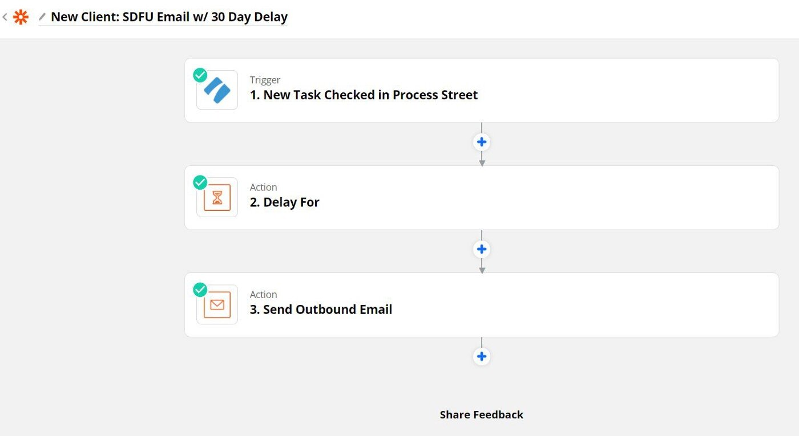
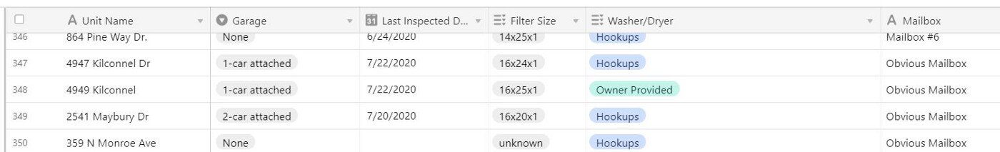

Property management is a never-ending series of small but important tasks. To succeed, we must complete all the tasks efficiently and in the right order. This gets harder and harder as we add more properties and especially more team members. Payroll is by far our largest expense, so how can we continue to add units without adding staff?
Common tasks easily sort themselves into a small handful of standard processes, which become checklists. Here’s a list of our 5 most common:
Lease Signing (Move-In) Checklist
Lease Ending (Move-Out) Checklist
Lease Renewal Checklist
New Property Checklist
Property De-management Checklist
Side note, what follows below works best if you do things in a standard way throughout your business. The more exceptions and one-off arrangements you make with property owner and tenants, the harder this becomes. Your first priority should be to standardize all your contracts (property management agreements and leases) and operating procedures so you can innovate around a small number of core processes that apply to every unit you manage.
So where do the no-code tools come in? I’ll use our “New Property Checklist” as an example. This is the checklist that we follow every time we win a new property management client. There are many tasks within this checklist where we use automation:
Every time we mark a new property as “Won” in our sales CRM (Leadsimple), a Zapier “zap” fires to automatically start a New Property Checklist in our checklist software (Process Street). It automatically names the checklist, populates data fields with key information from the sales process (such as the client’s name and email address and the property address), and assigns the checklist to the appropriate person.
From there, the new property is announced in Slack automatically so the entire team can see we won another client and check out the new property address. Again this integration is through Zapier:
Further down in the checklist, an initial email to the property owner requesting certain information is drafted with the click of a button, using the appropriate email template with key fields populated from checklist data (such as owner name and email address). This feature is part of Process Street.
Next up, we need to notify our after-hours maintenance vendor (Abodea) of the new property so they can add it to our account. Again, we use a template email within Process Street, so this is as simple as clicking a button. Email is a powerful no-code tool for connecting services that don’t support more sophisticated tools like Zapier or an API.
New clients at our firm receive a series of welcome emails from Mailchimp. Rather than manually adding them, Process Street connects to Mailchimp through Zapier so all we have to do is click a checkbox, and it zaps the client’s name and email address over to Mailchimp and subscribes them.
I like to check in with new clients 30 days after they start with our company. Checking off this item on the checklist creates a Zap that uses Zapier’s built-in “Delay” feature to send myself an email delayed by 30 days, reminding me to call the new client:

The more processes that can be standardized and automated, the faster and more accurately they can be completed. The net result is we’ve been able to add more and more properties under management while keeping payroll costs down.
I haven’t touched on it in this example, but the most powerful no-code automation surrounds tenant, lease and property data. Almost all the major PM software providers lock up that data up and charge you to access it programmatically, if you can do so at all. For example, integrating with our own property management software (Buildium) was not possible until just a couple months ago when they released a limited API for the first time ever. And they’ve restricted API access to their most expensive plan, roughly double our current cost.
It’s my belief that this data is so integral to succeeding in property management (which I define by providing great service to our clients at a reasonable cost), that we cannot rely on third party software for access. We are slowly pulling everything “without a dollar sign” (non-financial data) out of Buildium and into Airtable, where we have complete control over it and it can be easily connected with no-code tools.

How are you using automation in your property management business? Please share!
I’m Peter Lohmann, CEO and founder of RL Property Management, a residential property management company located in Columbus Ohio. If you enjoyed this article, you can connect with me on Twitter, subscribe to my podcast Owner Occupied, or sign up for my mailing list.